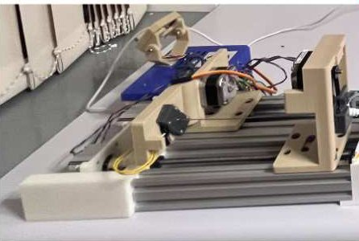

Academic bedside robots · kcl_tsp_zeidan2023
Transseptal robot
KCL force-sensing robot for transseptal puncture (needle and dilator-sheath manipulator)

1 / 6


- Family
- Academic bedside robots (academic)
- Devices
- standard transseptal kit: 8.5 Fr SL0 sheath (St Jude), Torflex dilator (Baylis), BRK-1 Brockenbrough needle (71 cm) (Sec. I)
- Degrees of freedom
- 4 actuated (translation and rotation of needle and of dilator-sheath), 2 task-space DOF
- Push
- Linear stage
- Twist
- Other
- Tested up to
- Bench
- Sim-to-real
- None found — No simulation-trained controller found for this robot.
Testing
- Highest level
- Bench
- What was tested
- puncture experiments on anthropomorphic fossa-ovalis tissue models (Sec. IV)
- Key numbers
- puncture force 3.97 +- 0.45 N (1 SD), similar to manual values in the literature (abstract)
Mechanism
- Push (translation)
- linear-stage+clamp (lead screws on NEMA-17 steppers M1, M2 move needle and dilator-sheath carriages)
- Twist (rotation)
- NEMA-17 steppers M3, M4 rotate needle and sheath continuously
- Device range
- one transseptal kit
- Target anatomy
- interatrial septum (transseptal puncture before left-atrial ablation)
Sensing and interface
- Force sensing
- optoelectronic sensors (New Japan Radio) in the tool fixtures measure contact and puncture force along one axis
- Leader and haptics
- N.R.
- Imaging
- N.R.
- Sterility
- N.R.
Size
- Footprint (mm)
- N.R.
- Mass (kg)
- N.R.
Simulation
- Simulation model
- none found
- Sim-trained controller
- none found
Versions
- Lineage
- 2023 ICRA (only); 2016: KCL 3-DOF MR-compatible multisegment cardiac catheter steering mechanism (Ataollahi 2016 TBME) (Belikov 2024 Fig. 5 AT1; Pescio 2025 Table 2 row 10) (belikov2024_evolution; pescio2025_endovascular); 2015-19: KCL (K. Rhode, H. Liu, J. Back) tendon-driven catheter robot with tension sensing (Back 2015; model-free position control Back 2017), likely the same hardware as Z. Zhang 2019 RA-L cable-driven continuum catheter control with Inria (Belikov 2024 Fig. 5 AT2, JEs) (belikov2024_evolution)
Sources
- Design and Development of a Novel Force-Sensing Robotic System for the Transseptal Puncture in Left Atrial Catheter Ablation · 2023 IEEE International Conference on Robotics and Automation (ICRA), 2023 · doi:10.1109/icra48891.2023.10160254 [zeidan2023_design]
- Evolution and current state of robotic catheters for endovascular surgery: A comprehensive review · Engineering Science and Technology, an International Journal, 2024 · doi:10.1016/j.jestch.2024.101789 [belikov2024_evolution]
- Endovascular robotics: technical advances and future directions · Minimally Invasive Therapy & Allied Technologies, 2025 · doi:10.1080/13645706.2025.2454237 [pescio2025_endovascular]
Notes
- Notes
- Authors applied CC BY to the accepted manuscript; IEEE version is publisher copyright.
This record
- Read level
- full
- Picture
- zeidan2023_transseptal_ICRA Fig. 6 (force-testing set-up), left part: the 4-stepper TSP robot ↗ — licence: publisher copyright (IEEE version); authors applied CC BY to the accepted manuscript (not obtained); grade C
- Picture changes
- native extract (1168x414); cropped to the robot, excluding the label arrow and red puncture inset; not upscaled
- Found by
- gap: Gap searches for robots the other searches missed.
- Data
- JSON · YAML:
records/robots/kcl_tsp_zeidan2023.yaml - Correction
- Suggest a correction [repository not created yet]